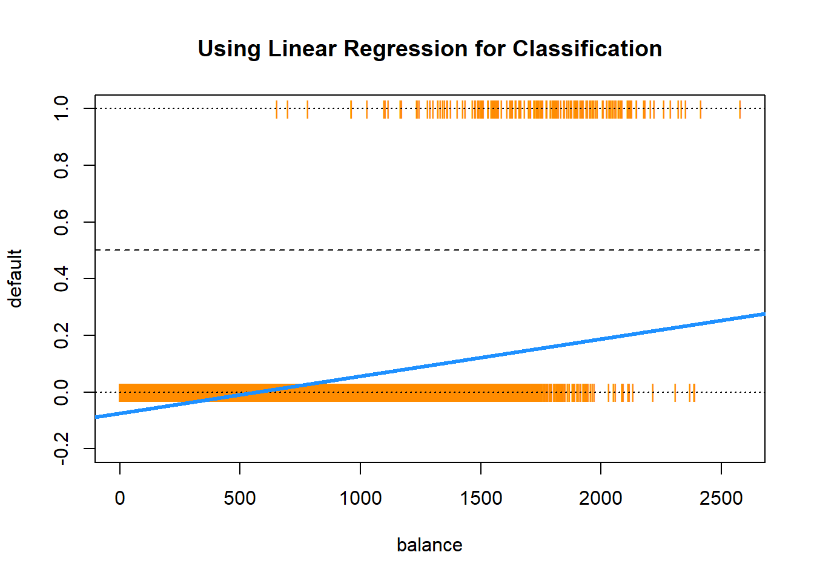
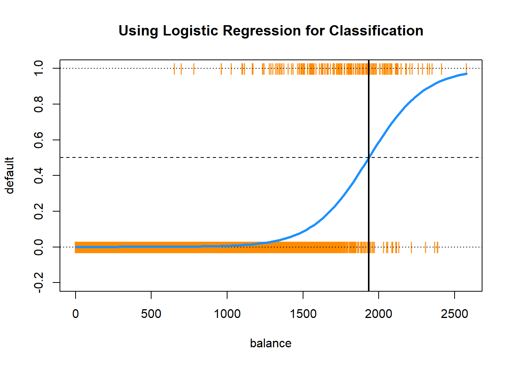

Chapter 4 in Introduction to Statistical Learning with Applications in R.
Guiding Questions
How do we make predictions about binary responses?
Why should we be concerned about using simple linear regression?
What is the right way to assess the accuracy of such a model?
Overview
Classification is a form of supervised learning where the response variable is categorical, as opposed to numeric for regression. Our goal is to find a rule, algorithm, or function which takes as input a feature vector, and outputs a category which is the true category as often as possible.
That is, the classifier \(\hat{C}(x)\) returns the predicted category \(\hat{y}(X)\).
\[
\hat{y}(x) = \hat{C}(x)
\]
To build our first classifier, we will use the Default dataset from the ISLR package.
library(ISLR)library(tibble)as_tibble(Default)
# A tibble: 10,000 × 4
default student balance income
<fct> <fct> <dbl> <dbl>
1 No No 730. 44362.
2 No Yes 817. 12106.
3 No No 1074. 31767.
4 No No 529. 35704.
5 No No 786. 38463.
6 No Yes 920. 7492.
7 No No 826. 24905.
8 No Yes 809. 17600.
9 No No 1161. 37469.
10 No No 0 29275.
# ℹ 9,990 more rows
Our goal is to properly classify individuals as defaulters based on student status, credit card balance, and income. Be aware that the response default is a factor, as is the predictor student.
is.factor(Default$default)
[1] TRUE
is.factor(Default$student)
[1] TRUE
As we did with regression, we test-train split our data. In this case, using 50% for each.
Often, some simple visualizations can suggest simple classification rules. To quickly create some useful visualizations, we use the featurePlot() function from the caret() package.
library(caret)
A density plot can often suggest a simple split based on a numeric predictor. Essentially this plot graphs a density estimate
\[
\hat{f}_{X_i}(x_i \mid Y = k)
\]
for each numeric predictor \(x_i\) and each category \(k\) of the response \(y\).
x is a data frame containing only numeric predictors. It would be nonsensical to estimate a density for a categorical predictor.
y is the response variable. It needs to be a factor variable. If coded as 0 and 1, you will need to coerce to factor for plotting.
plot specifies the type of plot, here density.
scales defines the scale of the axes for each plot. By default, the axis of each plot would be the same, which often is not useful, so the arguments here, a different axis for each plot, will almost always be used.
adjust specifies the amount of smoothing used for the density estimate.
pch specifies the plot character used for the bottom of the plot.
layout places the individual plots into rows and columns. For some odd reason, it is given as (col, row).
auto.key defines the key at the top of the plot. The number of columns should be the number of categories.
Is the income variable useful here? How about the balance variable? There seems to be a big difference in default status at a balance of about 1400. We will use this information shortly.
Above, we create a similar plot, except with student as the response. It’s not that we want to predict student – rather, we want to see if student is correlated with balance or income. We see that students often carry a slightly larger balance, and have far lower income. This will be useful to know when making more complicated classifiers.
We can use plot = "pairs" to consider multiple variables at the same time. This plot reinforces using balance to create a classifier, and again shows that income seems not that useful.
Similar to pairs is a plot of type ellipse, which requires the ellipse package. Here we only use numeric predictors, as essentially we are assuming multivariate normality. The ellipses mark points of equal density.
A Simple Classifier
A very simple classifier is a rule based on a boundary \(b\) for a particular input variable \(x\).
\[
\hat{C}(x) =
\begin{cases}
1 & x > b \\
0 & x \leq b
\end{cases}
\]
Based on the first plot, we believe we can use balance to create a reasonable classifier. In particular,
We write a simple R function that compares a variable to a boundary, then use it to make predictions on the train and test sets with our chosen variable and boundary.
In the classification setting, there are a large number of metrics to assess how well a classifier is performing.
One of the most obvious things to do is arrange predictions and true values in a cross table.
(trn_tab =table(predicted = default_trn_pred, actual = default_trn$default))
actual
predicted No Yes
No 4337 23
Yes 496 144
(tst_tab =table(predicted = default_tst_pred, actual = default_tst$default))
actual
predicted No Yes
No 4343 29
Yes 491 137
Often we give specific names to individual cells of these tables, and in the predictive setting, we would call this table a confusion matrix. Be aware, that the placement of Actual and Predicted values affects the names of the cells, and often the matrix may be presented transposed.
In statistics, we label the errors Type I and Type II, but these are hard to remember. False Positive and False Negative are more descriptive, so we choose to use these.
The confusionMatrix() function from the caret package can be used to obtain a wealth of additional information, which we see output below for the test data. Note that we specify which category is considered “positive.”
It is also common to discuss the accuracy, which is simply one minus the error.
Like regression, we often split the data, and then consider Train (Classification) Error and Test (Classification) Error will be used as a measure of how well a classifier will work on unseen future data.
Accuracy values can be found by calling confusionMatrix(), or, if stored, can be accessed directly. Here, we use them to obtain error rates (1-Accuracy).
1- trn_con_mat$overall["Accuracy"]
Accuracy
0.1038
# Note, R doesn't know to rename the result "err", so it keeps the name "Accuracy"
1- tst_con_mat$overall["Accuracy"]
Accuracy
0.104
# Note, R doesn't know to rename the result "err", so it keeps the name "Accuracy"
We can go back to the tst_con_mat table (called tst_tab) before and hand-calculate accuracy
print(tst_tab)
actual
predicted No Yes
No 4343 29
Yes 491 137
1- ((4343+137) /5000)
[1] 0.104
First some notation:
\(P\) is the total number of actual positives
\(TP\) is the total number of actual positives predicted to be positive
\(N\) is the total number of actual negatives
\(TN\) is the total number of actual negatives predicted to be negative
\(FP\) and \(FN\) are the total number of false positives and false negatives
Which means…
\(P = TP + FN\)
\(N = TN + FP\)
Sometimes guarding against making certain errors, FP or FN, are more important than simply finding the best accuracy. Thus, sometimes we will consider sensitivity and specificity.
Specificity is the share of actually-“no” observations that were predicted by the model to be “no”
Like accuracy, these can easily be found using confusionMatrix().
Balance and Prevalence
When considering how well a classifier is performing, often, it is understandable to assume that any accuracy in a binary classification problem above 0.50 is a reasonable classifier. This however is not the case. We need to consider the balance of the classes. To do so, we look at the prevalence of positive cases.
The confusionMatrix() function won’t even accept this table as input, because it isn’t a full matrix, only one row, so we calculate error rates directly. To do so, we write a function.
This classifier does better than the previous. But the point is, in reality, to create a good classifier, we should obtain a test error better than the 0.033, which is obtained by simply manipulating the prevalences. Next section, we’ll introduce much better classifiers which should have no problem accomplishing this task. Point is, think carefully about what you’re putting your classifier up against. In March 2020 when we were very worried about COVID test accuracy, and when prevalance was, say, 1%, it was pointed out that we could make a 99% accurate COVID test by simply returning “No COVID” for every test! We’d be the new Theranos!
Logistic Regression
In this section, we continue our discussion of classification. We introduce our first model for classification, logistic regression. To begin, we return to the Default dataset from above.
library(ISLR)library(tibble)as_tibble(Default)
# A tibble: 10,000 × 4
default student balance income
<fct> <fct> <dbl> <dbl>
1 No No 730. 44362.
2 No Yes 817. 12106.
3 No No 1074. 31767.
4 No No 529. 35704.
5 No No 786. 38463.
6 No Yes 920. 7492.
7 No No 826. 24905.
8 No Yes 809. 17600.
9 No No 1161. 37469.
10 No No 0 29275.
# ℹ 9,990 more rows
We also repeat the test-train split from above (you need not repeat this step if you have this saved).
Before moving on to logistic regression, why not plain, old, linear regression? Let’s copy the data so that we can manipulate it, then go back to the original:
Since linear regression expects a numeric response variable, we coerce the response to be numeric. Although these look like character strings, they are factors, and if you recall, factors are actually saved as integers and then have a mapping (levels) from each number to a value. We can look at str(default_trn_lm to see what the factors and levels are.
“No” is the first level, and it maps to 1. “Yes” is second, and it maps to 2. Notice that we also need to shift the results, as we require 0 and 1, not 1 and 2. Of course, we can always use case_when to do this in whatever way we wish.
\[
\hat{\mathbb{E}}[Y \mid X = x] = X\hat{\beta}.
\]
Since \(Y\) is limited to values of \(0\) and \(1\), we have
\[
\mathbb{E}[Y \mid X = x] = P(Y = 1 \mid X = x).
\]
It would then seem reasonable that \(\mathbf{X}\hat{\beta}\) is a reasonable estimate of \(P(Y = 1 \mid X = x)\). We test this on the Default data.
model_lm =lm(default ~ balance, data = default_trn_lm)
Everything seems to be working, until we plot the results.
plot(default ~ balance, data = default_trn_lm,col ="darkorange", pch ="|", ylim =c(-0.2, 1),main ="Using Linear Regression for Classification")abline(h =0, lty =3)abline(h =1, lty =3)abline(h =0.5, lty =2)abline(model_lm, lwd =3, col ="dodgerblue")

Two issues arise. First, all of the predicted probabilities are below 0.5. That means, we would classify every observation as a "No". This is certainly possible, but not what we would expect.
all(predict(model_lm) <0.5)
[1] TRUE
The next, and bigger issue, is predicted probabilities less than 0.
any(predict(model_lm) <0)
[1] TRUE
Bayes Classifier
Why are we using a predicted probability of 0.5 as the cutoff for classification? Recall, the Bayes Classifier, which minimizes the classification error:
\[
C^B(x) = \underset{g}{\mathrm{argmax}} \ P(Y = g \mid X = x)
\]
So, in the binary classification problem, we will use predicted probabilities
\[
\hat{p}(x) = \hat{P}(Y = 1 \mid { X = x})
\]
and
\[
\hat{P}(Y = 0 \mid { X = x})
\]
and then classify to the larger of the two. We actually only need to consider a single probability, usually \(\hat{P}(Y = 1 \mid { X = x})\). Since we use it so often, we give it the shorthand notation, \(\hat{p}(x)\). Then the classifier is written,
This classifier is essentially estimating the Bayes Classifier - it takes the value of \(x\), figures out which is larger, the \(\hat{P}(Y=1|X=x)\) or \(\hat{P}(Y=0 | X=x)\), and returns the classification \(\hat{C}(x)\) as whichever probability is larger. Since there are only two values for \(Y\in\{0,1\}\), the larger is always the one greater than \(.50\). Thus, since this is a Bayes Classifier, it minimizes classification errors.
Logistic Regression with glm()
To better estimate the probability
\[
p(x) = P(Y = 1 \mid {X = x})
\] we turn to logistic regression. The model is written
Notice, we use the sigmoid function as shorthand notation, which appears often in deep learning literature. It takes any real input, and outputs a number between 0 and 1. How useful! (This is actualy a particular sigmoid function called the logistic function, but since it is by far the most popular sigmoid function, often sigmoid function is used to refer to the logistic function)
The model is fit by numerically maximizing the likelihood, which we will let R take care of. Essentially, R is going to try a whole bunch of guesses for \(\mathbf{\beta}\) and choose the one that best explains the data we have.
We start with a single predictor example, again using balance as our single predictor. Note that default_trn has a factor variable for default (No/Yes). Since R represents factor variables as numbers (here, 1 and 2), glm figures out that you mean No and Yes for 0 and 1.
model_glm =glm(default ~ balance, data = default_trn, family ="binomial")
Fitting this model looks very similar to fitting a simple linear regression. Instead of lm() we use glm(). The only other difference is the use of family = "binomial" which indicates that we have a two-class categorical response. Using glm() with family = "gaussian" would perform the usual linear regression.
First, we can obtain the fitted coefficients the same way we did with linear regression.
coef(model_glm)
(Intercept) balance
-10.493158288 0.005424994
The next thing we should understand is how the predict() function works with glm(). So, let’s look at some predictions.
Note that these are probabilities, not classifications. To obtain classifications, we will need to compare to the correct cutoff value with an ifelse() statement.
model_glm_pred =ifelse(predict(model_glm, type ="link") >0, "Yes", "No")# model_glm_pred = ifelse(predict(model_glm, type = "response") > 0.5, "Yes", "No")
To see how much better logistic regression is for this task, we create the same plot we used for linear regression.
plot(default ~ balance, data = default_trn_lm,col ="darkorange", pch ="|", ylim =c(-0.2, 1),main ="Using Logistic Regression for Classification")abline(h =0, lty =3)abline(h =1, lty =3)abline(h =0.5, lty =2)curve(predict(model_glm, data.frame(balance = x), type ="response"),add =TRUE, lwd =3, col ="dodgerblue")abline(v =-coef(model_glm)[1] /coef(model_glm)[2], lwd =2)

This plot contains a wealth of information.
The orange | characters are the data, \((x_i, y_i)\).
The blue “curve” is the predicted probabilities given by the fitted logistic regression. That is, \[
\hat{p}(x) = \hat{P}(Y = 1 \mid { X = x})
\]
The solid vertical black line represents the decision boundary, the balance that obtains a predicted probability of 0.5. In this case balance = 1934.2247145.
The decision boundary is found by solving for points that satisfy
Using the usual formula syntax, it is easy to add or remove complexity from logistic regressions.
model_1 =glm(default ~1, data = default_trn, family ="binomial")model_2 =glm(default ~ ., data = default_trn, family ="binomial")model_3 =glm(default ~ . ^2+I(balance ^2),data = default_trn, family ="binomial")
Note that, using polynomial transformations of predictors will allow a linear model to have non-linear decision boundaries.
Here we see the misclassification error rates for each model. The train (weakly) decreases, and the test decreases, until it starts to increases. Everything we learned about the bias-variance tradeoff for regression also applies here.
diff(train_errors)
[1] -0.0066 0.0000
diff(test_errors)
[1] -0.0068 0.0006
We call model_2 the additive logistic model, which we will use quite often.
ROC Curves
Let’s return to our simple model with only balance as a predictor.
model_glm =glm(default ~ balance, data = default_trn, family ="binomial")
We write a function which allows use to make predictions based on different probability cutoffs.
Accuracy Sensitivity Specificity
c = 0.10 0.9328 0.71779141 0.9400455
c = 0.50 0.9730 0.31288344 0.9952450
c = 0.90 0.9688 0.04294479 1.0000000
We see then sensitivity decreases as the cutoff is increased. Conversely, specificity increases as the cutoff increases. This is useful if we are more interested in a particular error, instead of giving them equal weight.
Note that usually the best accuracy will be seen near \(c = 0.50\). This is not always true, and in your lab, you may need to change your cutoff.
Instead of manually checking cutoffs, we can create an ROC curve (receiver operating characteristic curve) which will sweep through all possible cutoffs, and plot the sensitivity and specificity.
Where on this curve would you think is the “best” place to be? Why?
Where on this curve would you think is the “worst” place to be? Why?
The AUC is the “area under the curve”. One interpretation of the AUC is that it is “the probability that the model ranks a randomly selected positive more highly than a randomly selected negative.” A good model will have a high AUC. A high AUC has a high sensitivity and a high specificity over all of the cutoff values.
Multinomial Logistic Regression
What if the response contains more than two categories? For that we need multinomial logistic regression.
We will omit the details, as ISL has as well. If you are interested, the Wikipedia page provides a rather thorough coverage. Also note that the above is an example of the softmax function.
As an example of a dataset with a three category response, we use the iris dataset, which is so famous, it has its own Wikipedia entry. It is also a default dataset in R, so no need to load it.
To perform multinomial logistic regression, we use the multinom function from the nnet package. Training using multinom() is done using similar syntax to lm() and glm(). We add the trace = FALSE argument to suppress information about updates to the optimization routine as the model is trained.
library(nnet)model_multi =multinom(Species ~ ., data = iris_trn, trace =FALSE)summary(model_multi)$coefficients
Notice that by default, classifications are returned. When obtaining probabilities, we are given the predicted probability for each class.
Interestingly, you’ve just fit a neural network, and you didn’t even know it! (Hence the nnet package.) Later we will discuss the connections between logistic regression, multinomial logistic regression, and simple neural networks.